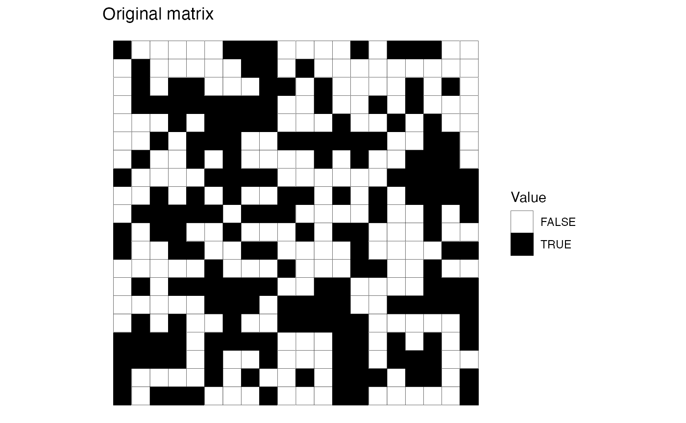
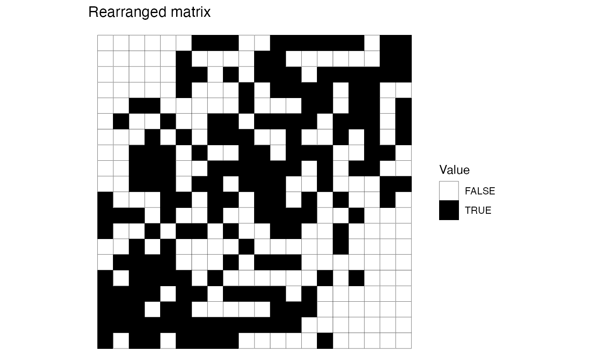
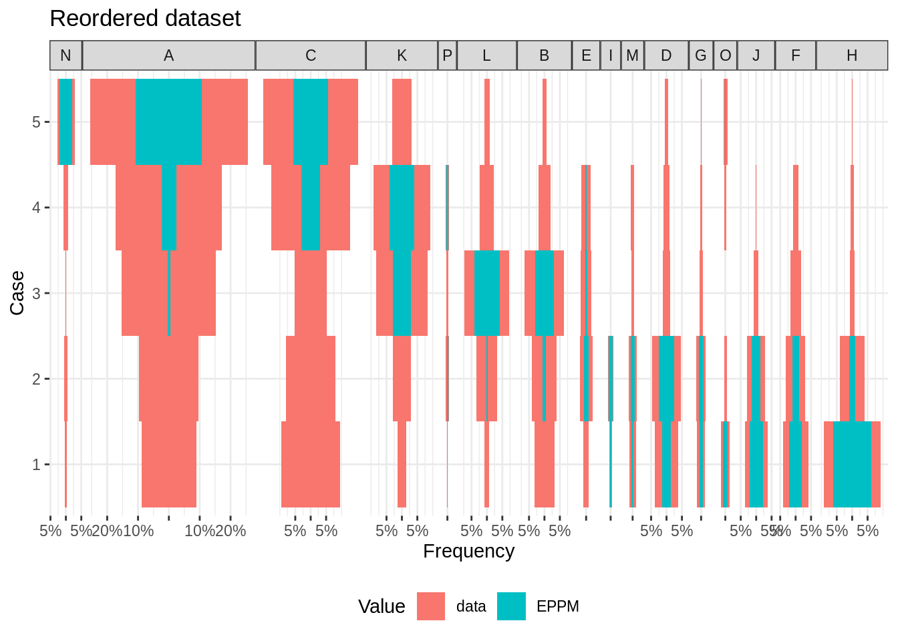
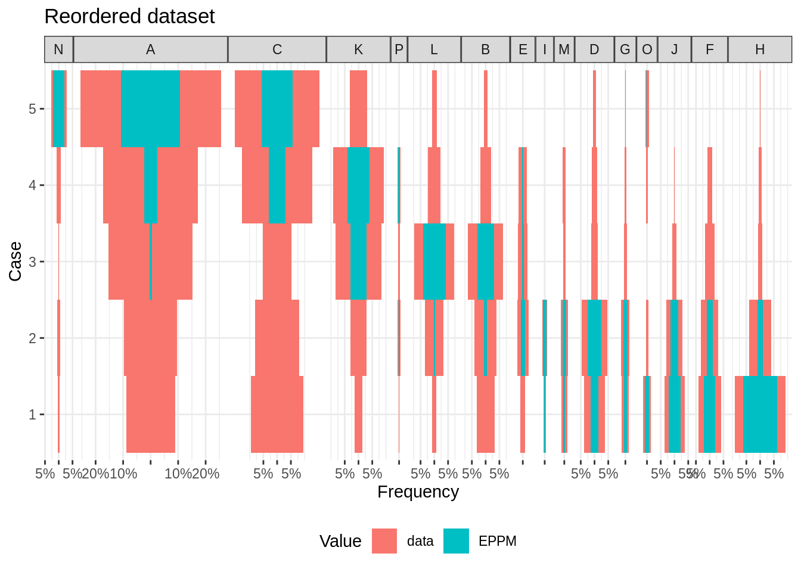
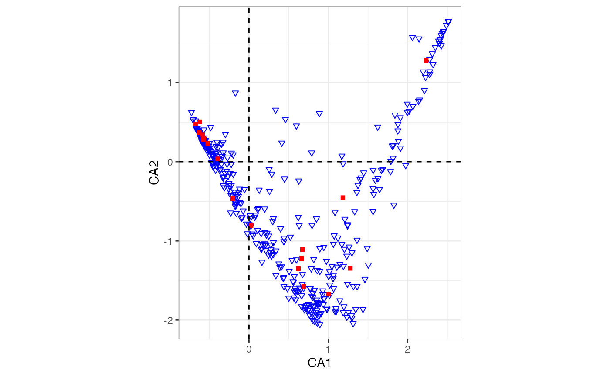
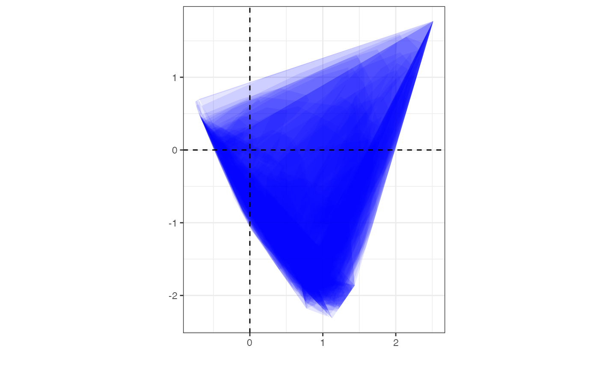
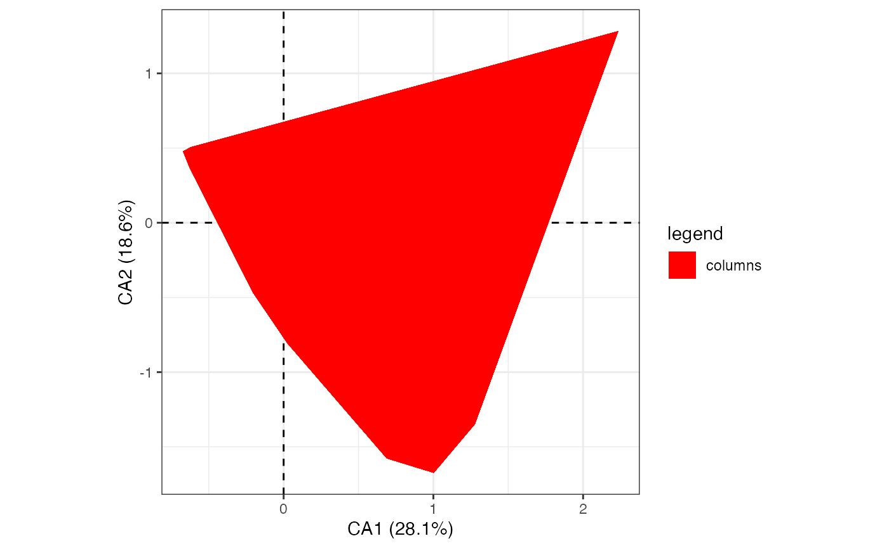
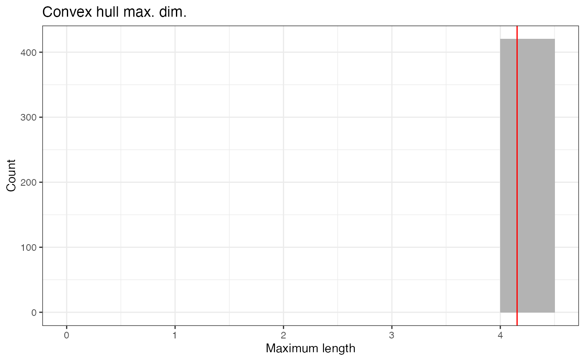

Introduction
The matrix seriation problem in archaeology is based on three conditions and two assumptions, which Dunnell (1970) summarizes as follows.
The homogeneity conditions state that all the groups included in a seriation must:
- Be of comparable duration,
- Belong to the same cultural tradition,
- Come from the same local area.
The mathematical assumptions state that the distribution of any historical or temporal class:
- Is continuous through time,
- Exhibits the form of a unimodal curve.
Theses assumptions create a distributional model and ordering is accomplished by arranging the matrix so that the class distributions approximate the required pattern. The resulting order is inferred to be chronological.
Reciprocal ranking
Reciprocal ranking iteratively rearrange rows and/or columns according to their weighted rank in the data matrix until convergence (Ihm 2005).
For a given incidence matrix \(C\):
- The rows of \(C\) are rearranged in increasing order of:
\[ x_{i} = \sum_{j = 1}^{p} j \frac{c_{ij}}{c_{i \cdot}} \]
- The columns of \(C\) are rearranged in a similar way:
\[ y_{j} = \sum_{i = 1}^{m} i \frac{c_{ij}}{c_{\cdot j}} \]
These two steps are repeated until convergence. Note that this procedure could enter into an infinite loop.
## Build an incidence matrix with random data
set.seed(12345)
incidence1 <- IncidenceMatrix(data = sample(0:1, 400, TRUE, c(0.6, 0.4)),
nrow = 20)
## Get seriation order on rows and columns
## If no convergence is reached before the maximum number of iterations (100),
## it stops with a warning.
(indices <- seriate_rank(incidence1, margin = c(1, 2), stop = 100))
#> <PermutationOrder>
#> Permutation order for matrix seriation:
#> - Row order: 1 4 20 3 9 16 19 10 13 2 11 7 17 5 6 18 14 15 8 12...
#> - Column order: 1 16 9 4 8 14 3 20 13 2 6 18 7 17 5 11 19 12 15 10...
#> - Method: reciprocal ranking
## Permute matrix rows and columns
incidence2 <- permute(incidence1, indices)
## Plot matrix
plot_heatmap(incidence1) +
ggplot2::labs(title = "Original matrix") +
ggplot2::scale_fill_manual(values = c("TRUE" = "black", "FALSE" = "white"))
plot_heatmap(incidence2) +
ggplot2::labs(title = "Rearranged matrix") +
ggplot2::scale_fill_manual(values = c("TRUE" = "black", "FALSE" = "white"))
The positive difference from the column mean percentage (in french “écart positif au pourcentage moyen”, EPPM) represents a deviation from the situation of statistical independence (Desachy 2004). As independence can be interpreted as the absence of relationships between types and the chronological order of the assemblages, EPPM is a useful graphical tool to explore significance of relationship between rows and columns related to seriation (Desachy 2004).
## Replicates Desachy 2004 results
## Coerce dataset to an abundance matrix
compiegne_counts <- as_count(compiegne)
## Plot original data matrix
plot_ford(compiegne_counts, EPPM = TRUE) +
ggplot2::labs(title = "Original dataset") +
khroma::scale_fill_bright()
## Get seriation order for columns on EPPM using the reciprocal averaging method
## Expected column order: N, A, C, K, P, L, B, E, I, M, D, G, O, J, F, H
compiegne_indices <- seriate_rank(compiegne_counts, EPPM = TRUE, margin = 2)
## Permute columns
compiegne_seriation <- permute(compiegne_counts, compiegne_indices)
## Plot new matrix
plot_ford(compiegne_seriation, EPPM = TRUE) +
ggplot2::labs(title = "Reordered dataset") +
khroma::scale_fill_bright() 

correspondence analysis
Seriation
correspondence Analysis (CA) is an effective method for the seriation of archaeological assemblages. The order of the rows and columns is given by the coordinates along one dimension of the CA space, assumed to account for temporal variation. The direction of temporal change within the correspondence analysis space is arbitrary: additional information is needed to determine the actual order in time.
## Coerce dataset to an count matrix
zuni_counts <- as_count(zuni)
## correspondence analysis of the whole dataset
corresp <- arkhe::ca(zuni_counts)
## Plot CA results
plot_ca(corresp, axes = c(1, 2), map = c("rows", "columns")) +
ggplot2::theme_bw()
#> CA1 CA2 legend
#> LZ1105 0.052212965 -0.931670946 rows
#> LZ1103 0.259100627 -0.371677363 rows
#> LZ1100 0.108941939 -0.600216813 rows
#> LZ1099 0.879290470 -1.949664094 rows
#> LZ1097 0.621602538 -0.700561856 rows
#> LZ1096 1.995206628 0.731913136 rows
#> LZ1095 0.276556034 -1.051118421 rows
#> LZ1092 0.543372043 -1.242720904 rows
#> LZ1091 0.249619355 -0.935749148 rows
#> LZ1090 2.348303999 1.448090197 rows
#> LZ1088 2.513022325 1.771860083 rows
#> LZ1087 1.445814456 -0.137844926 rows
#> LZ1083 1.565643089 -0.103985514 rows
#> LZ1082 1.202390888 -1.102840954 rows
#> LZ1078 1.186399590 -0.022918651 rows
#> LZ1077 2.513022325 1.771860083 rows
#> LZ1076 -0.223400498 -0.029498532 rows
#> LZ1075 0.887312217 0.610849160 rows
#> LZ1074 2.278601070 1.139680410 rows
#> LZ1073 2.513022325 1.771860083 rows
#> LZ1072 2.513022325 1.771860083 rows
#> LZ1070 0.432819251 -1.471396753 rows
#> LZ1066 1.975070559 -0.045112635 rows
#> LZ1065 0.448633808 -0.215543566 rows
#> LZ1064 2.513022325 1.771860083 rows
#> LZ1063 -0.197848543 -0.156845931 rows
#> LZ1062 -0.222367303 0.111346982 rows
#> LZ1061 0.414372058 0.237898453 rows
#> LZ1060 0.334877227 0.655170894 rows
#> LZ1059 2.136881082 0.766406550 rows
#> LZ1058 0.014369809 -0.717462386 rows
#> LZ1054 -0.252523693 -0.270048891 rows
#> LZ1053 1.242874684 -0.807614819 rows
#> LZ1052 2.061538827 1.573909588 rows
#> LZ1047 0.024031146 -0.808753472 rows
#> LZ1045 1.882523302 0.261684340 rows
#> LZ1043 -0.398417669 -0.025744584 rows
#> LZ1038 -0.227862531 -0.424405190 rows
#> LZ1036 0.197195390 -0.594430445 rows
#> LZ1035 -0.055974839 -0.347369883 rows
#> LZ1034 0.521585727 -0.949242588 rows
#> LZ1033 0.398409172 -0.843024162 rows
#> LZ1025 0.628663178 -0.239299441 rows
#> LZ1023 0.850515863 -0.718908504 rows
#> LZ1020 0.459213123 0.536908681 rows
#> LZ1019 0.254086618 -0.094545901 rows
#> LZ1018 -0.320214296 -0.188267844 rows
#> LZ1016 0.632773607 -0.805290028 rows
#> LZ1015 0.580974859 -1.596583321 rows
#> LZ1010 1.015100075 -1.384607809 rows
#> LZ1009 0.893086209 -1.095232382 rows
#> LZ1008 0.584526229 -1.647803869 rows
#> LZ1007 0.091795415 -1.029733790 rows
#> LZ1004 0.081452100 -0.672022115 rows
#> LZ1001 1.413276859 -0.201520843 rows
#> LZ0988 2.513022325 1.771860083 rows
#> LZ0987 0.340046697 -1.123195414 rows
#> LZ0986 0.805620927 -2.002100718 rows
#> LZ0983 2.513022325 1.771860083 rows
#> LZ0982 2.513022325 1.771860083 rows
#> LZ0980 0.566405860 -1.717472691 rows
#> LZ0978 1.063263248 -1.432574246 rows
#> LZ0977 1.461667265 -1.482073291 rows
#> LZ0975 0.839111713 -1.899719583 rows
#> LZ0974 0.816730995 -1.231042057 rows
#> LZ0973 0.761655077 -1.931585965 rows
#> LZ0969 0.835585889 -1.945454255 rows
#> LZ0964 0.501965978 -1.721283774 rows
#> LZ0958 1.908904012 0.558588645 rows
#> LZ0955 1.572899643 -0.410854729 rows
#> LZ0939 1.645847011 -0.345813681 rows
#> LZ0937 1.876857373 0.392979056 rows
#> LZ0936 0.743305141 -1.878116353 rows
#> LZ0934 0.701527343 -1.839510528 rows
#> LZ0931 0.664718222 -1.828817014 rows
#> LZ0929 1.063725272 -1.037889943 rows
#> LZ0927 0.688099500 -1.597697640 rows
#> LZ0910 2.513022325 1.771860083 rows
#> LZ0863 0.983541102 -1.862552112 rows
#> LZ0862 0.246413773 -1.177273566 rows
#> LZ0861 1.066486664 -1.601100827 rows
#> LZ0860 0.598183729 -1.236249238 rows
#> LZ0859 -0.159648910 -0.649515051 rows
#> LZ0857 0.210454831 -1.046174341 rows
#> LZ0856 0.274233907 -1.147677658 rows
#> LZ0854 -0.561493301 0.254535953 rows
#> LZ0853 -0.470515790 -0.010031992 rows
#> LZ0852 -0.249904287 -0.300551745 rows
#> LZ0851 0.506704452 -1.382252641 rows
#> LZ0826 1.146473632 -1.293139678 rows
#> LZ0822 0.893079710 -2.054218249 rows
#> LZ0821 0.389054991 -1.331673452 rows
#> LZ0816 -0.553751943 0.266757628 rows
#> LZ0812 -0.560693086 0.205646410 rows
#> LZ0809 0.805902554 -1.661114471 rows
#> LZ0808 -0.132320496 -0.435537665 rows
#> LZ0806 -0.085085626 -0.703299354 rows
#> LZ0797 -0.501600492 0.143205107 rows
#> LZ0796 -0.263316352 -0.180508135 rows
#> LZ0789 -0.311094687 -0.325658952 rows
#> LZ0783 0.437582911 -1.455513254 rows
#> LZ0782 0.700667386 -1.867954230 rows
#> LZ0778 -0.405366649 -0.010550691 rows
#> LZ0777 -0.443161909 0.049532176 rows
#> LZ0776 1.108260417 -1.327429162 rows
#> LZ0773 1.073480600 -0.932422223 rows
#> LZ0768 0.772057375 -1.596398762 rows
#> LZ0760 -0.516759713 0.167603646 rows
#> LZ0759 -0.604720757 0.293990655 rows
#> LZ0754 -0.667400754 0.429146142 rows
#> LZ0751 0.308881531 -1.018488890 rows
#> LZ0750 -0.495865141 0.084318172 rows
#> LZ0747 -0.504061967 0.149697999 rows
#> LZ0744 0.867954377 -1.796769843 rows
#> LZ0742 -0.450682321 -0.061989918 rows
#> LZ0741 -0.181013881 -0.380828421 rows
#> LZ0735 0.798431369 -1.928054251 rows
#> LZ0732 0.795087658 -0.801308306 rows
#> LZ0730 0.597734542 0.454159817 rows
#> LZ0727 2.423363698 1.469031296 rows
#> LZ0719 -0.159947774 -0.432477174 rows
#> LZ0718 2.211046060 0.903828448 rows
#> LZ0715 2.195665466 1.138244594 rows
#> LZ0713 1.208512343 -0.723730933 rows
#> LZ0710 1.399385895 -0.221346680 rows
#> LZ0704 -0.574932520 0.251794175 rows
#> LZ0703 1.297904388 -1.147082879 rows
#> LZ0658 1.291538168 -1.943671893 rows
#> LZ0655 1.298435140 -1.972021956 rows
#> LZ0654 0.789304230 -1.809191740 rows
#> LZ0653 0.929367610 -1.628780938 rows
#> LZ0627 0.853113408 -1.744150449 rows
#> LZ0620 1.362012400 -0.987602031 rows
#> LZ0618 1.625169881 -0.209967533 rows
#> LZ0612 0.977554444 -1.847121613 rows
#> LZ0610 0.859681273 -1.778851124 rows
#> LZ0606 0.163621282 -1.266028075 rows
#> LZ0605 1.667201274 -0.103450561 rows
#> LZ0597 0.888515947 -1.789330067 rows
#> LZ0595 1.242917258 -0.792458163 rows
#> LZ0594 0.338710664 -1.434757512 rows
#> LZ0593 -0.230687426 -0.644055904 rows
#> LZ0591 0.827412513 -1.619694357 rows
#> LZ0589 0.554614421 -1.511627903 rows
#> LZ0588 0.588782781 -1.742552948 rows
#> LZ0587 1.015493406 -1.686737558 rows
#> LZ0583 -0.307449043 -0.233147448 rows
#> LZ0582 -0.117735550 -0.343371141 rows
#> LZ0581 0.611065720 -1.632666628 rows
#> LZ0578 -0.019861242 -0.906895344 rows
#> LZ0570 0.484848398 -1.599820817 rows
#> LZ0569 0.671490793 -1.548756270 rows
#> LZ0568 -0.253950671 -0.340682916 rows
#> LZ0567 0.014932677 -0.676864921 rows
#> LZ0565 -0.595277821 0.257423803 rows
#> LZ0563 -0.323295005 -0.301360174 rows
#> LZ0562 -0.235431671 -0.378019787 rows
#> LZ0561 -0.168043895 -0.545743079 rows
#> LZ0560 -0.171831072 -0.562241957 rows
#> LZ0557 -0.647362163 0.386206619 rows
#> LZ0546 0.897528385 -1.784378139 rows
#> LZ0545 -0.156995059 -0.534913797 rows
#> LZ0540 -0.165718422 -0.409805931 rows
#> LZ0539 0.162777873 -1.086459291 rows
#> LZ0538 0.002092373 -0.792196925 rows
#> LZ0537 0.409348417 -1.324327208 rows
#> LZ0532 1.313303766 -2.042601761 rows
#> LZ0531 1.017061460 -1.555779239 rows
#> LZ0527 0.040335882 -0.909129929 rows
#> LZ0524 1.332078395 -0.626915675 rows
#> LZ0523 0.074179599 -0.696865398 rows
#> LZ0516 -0.575413607 0.223727452 rows
#> LZ0513 -0.304763565 -0.142473278 rows
#> LZ0512 -0.419851687 -0.103908491 rows
#> LZ0508 0.155940409 -1.103536390 rows
#> LZ0507 -0.512407793 0.166687714 rows
#> LZ0505 0.860962132 -1.372952949 rows
#> LZ0502 -0.592357147 0.272632525 rows
#> LZ0501 -0.482674812 0.434397856 rows
#> LZ0478 0.948986166 -1.729465408 rows
#> LZ0431 2.143499296 1.556569095 rows
#> LZ0426 -0.568732297 0.404736231 rows
#> LZ0423 0.308950372 -0.715114835 rows
#> LZ0403B -0.171177757 0.871433512 rows
#> LZ0403A 1.170306966 0.073759442 rows
#> LZ0367 2.278223656 1.104332334 rows
#> LZ0363 1.004739816 -1.445504250 rows
#> LZ0362 1.783875221 -0.121380023 rows
#> LZ0361 0.938296458 -1.801593426 rows
#> LZ0360 0.815698784 -1.820521155 rows
#> LZ0359 1.564400502 -0.624118344 rows
#> LZ0358 1.804861330 0.201210792 rows
#> LZ0355 0.674847593 -1.422693625 rows
#> LZ0354 -0.366068894 -0.111602027 rows
#> LZ0350 0.893466306 -1.381373631 rows
#> LZ0349 0.376335474 -1.287466554 rows
#> LZ0348 -0.450838616 -0.017332804 rows
#> LZ0347 -0.115870629 -0.515323286 rows
#> LZ0346 0.305367112 -1.169697704 rows
#> LZ0345 2.399279995 1.497556561 rows
#> LZ0343 0.943490411 -1.731825059 rows
#> LZ0342 1.188956013 -1.903350599 rows
#> LZ0341 1.170610082 -1.042586071 rows
#> LZ0337 0.827659777 -2.015148507 rows
#> LZ0335 0.976044179 -1.252482640 rows
#> LZ0334 2.453975129 1.651921295 rows
#> LZ0332 1.098751085 -1.885022286 rows
#> LZ0329 0.791639002 -1.696229051 rows
#> LZ0326 0.561553811 -1.517122055 rows
#> LZ0323 0.637664706 -1.590404840 rows
#> LZ0322 0.735851748 -1.832934257 rows
#> LZ0319 0.202357481 -0.890611465 rows
#> LZ0318 0.817049802 -1.843094774 rows
#> LZ0310 1.096691790 -1.854425565 rows
#> LZ0309 2.409737093 1.544353763 rows
#> LZ0307 1.788977590 0.010110049 rows
#> LZ0301 0.790125188 0.113926978 rows
#> LZ0295 2.311649554 1.367436270 rows
#> LZ0294 1.622922001 0.440210245 rows
#> LZ0292 2.513022325 1.771860083 rows
#> LZ0290 2.453975129 1.651921295 rows
#> LZ0283 0.750356496 -1.872043735 rows
#> LZ0282 -0.223771294 -0.300793974 rows
#> LZ0281 0.128452839 -0.355137993 rows
#> LZ0280 0.201950971 -1.056417724 rows
#> LZ0279 0.571371869 -1.632942646 rows
#> LZ0276 0.652658474 -1.605559365 rows
#> LZ0274 -0.101595520 -0.527011263 rows
#> LZ0273 0.108690927 -0.862969650 rows
#> LZ0272 0.228051384 -0.899938973 rows
#> LZ0271 2.513022325 1.771860083 rows
#> LZ0270 -0.097139877 -0.710094386 rows
#> LZ0265 0.299574356 -0.753184843 rows
#> LZ0264 0.283064604 -1.185936994 rows
#> LZ0263 1.083609892 -0.635665034 rows
#> LZ0252 0.908333877 -1.915602259 rows
#> LZ0251 0.727879674 -1.817084159 rows
#> LZ0247 0.212826340 -1.118462472 rows
#> LZ0244 0.571383914 -1.446751654 rows
#> LZ0241 0.193480562 -1.033074359 rows
#> LZ0235 0.748711202 -1.799583921 rows
#> LZ0233 -0.187249657 -0.496532617 rows
#> LZ0229 -0.073667643 -0.618021572 rows
#> LZ0227 0.824840383 -1.828790948 rows
#> LZ0226 0.663718030 -1.691290539 rows
#> LZ0219 0.167149033 -1.039655512 rows
#> LZ0218 0.153632877 -0.903494159 rows
#> LZ0217 0.590738630 -1.623613214 rows
#> LZ0216 0.767798092 -1.879755164 rows
#> LZ0215 -0.031974232 -0.783834065 rows
#> LZ0214 0.811253412 -1.846121325 rows
#> LZ0211 0.635515399 -1.595390781 rows
#> LZ0210 -0.443161909 0.049532176 rows
#> LZ0209 1.144770935 -1.754128878 rows
#> LZ0208 -0.163312082 -0.519471310 rows
#> LZ0204 -0.173922999 -0.509177736 rows
#> LZ0203 0.275394070 -1.104623418 rows
#> LZ0202 1.685547316 -0.093255422 rows
#> LZ0198 1.061163383 -1.470903932 rows
#> LZ0195 1.839933093 0.593647309 rows
#> LZ0106 1.374049282 -0.295684567 rows
#> LZ0105 1.490324091 -1.091827007 rows
#> LZ0103 0.118341422 -0.589826046 rows
#> LZ0096 1.593019840 -0.230254432 rows
#> LZ0094 2.513022325 1.771860083 rows
#> LZ0093 1.045410895 -1.318163981 rows
#> LZ0071 1.995772659 0.627060413 rows
#> LZ0068 0.943655629 -1.078246663 rows
#> LZ0067 1.877595936 0.474494099 rows
#> LZ0066 0.860760076 -2.034987534 rows
#> LZ0062 1.262449171 -1.074382122 rows
#> LZ0060 1.232623779 -1.189699541 rows
#> LZ0059 0.785002788 -1.348396293 rows
#> LZ0057 2.425544997 1.594172990 rows
#> LZ0056 2.513022325 1.771860083 rows
#> LZ0053 2.489175550 1.723967789 rows
#> LZ0052 0.716690687 -1.840231449 rows
#> LZ0044 0.287812147 -0.152883285 rows
#> LZ0042 0.440302526 -1.572987050 rows
#> LZ0040 2.016693316 0.642657044 rows
#> LZ0037 1.190384065 -1.317890390 rows
#> LZ0030 1.234048753 -1.961705783 rows
#> LZ0029 0.441896686 -0.963131370 rows
#> LZ0027 1.241176483 -1.544436655 rows
#> LZ0026 1.359903218 -0.384569609 rows
#> LZ0025 1.196460878 -1.829447648 rows
#> LZ0023 0.887431934 -1.927579930 rows
#> LZ0020 1.908965375 0.174028061 rows
#> LZ0019 -0.432315023 0.106709155 rows
#> LZ0018 -0.280472835 -0.115799227 rows
#> LZ0017 1.252883954 -1.900769561 rows
#> LZ0015 0.772321938 -1.604051807 rows
#> LZ0014 2.446341042 1.641081130 rows
#> LZ0013 1.083972516 -1.886736693 rows
#> LZ0008 1.504877025 -1.302016410 rows
#> LZ0007 1.826670072 -0.546346488 rows
#> LZ0006 2.513022325 1.771860083 rows
#> LZ0005U 1.362887598 -1.573649877 rows
#> LZ0005T 0.219747599 -0.922720686 rows
#> LZ0005Q 1.818061838 0.206534797 rows
#> LZ0005P 0.857413272 -1.879355374 rows
#> LZ0005K 2.066618097 0.702016918 rows
#> LZ0005I 1.121141862 -0.960065456 rows
#> LZ0005F 2.226539709 1.069235337 rows
#> LZ0005E 2.439213330 1.621936598 rows
#> LZ0005D 2.320277551 1.230501882 rows
#> LZ0005C 2.391582858 1.528824972 rows
#> LZ0005B 2.150014363 0.782825295 rows
#> LZ0005A 0.928174448 -1.672573618 rows
#> LZ0005 1.564861842 -0.337263392 rows
#> LZ0003 2.276833539 1.292104931 rows
#> LZ0002 1.815161332 0.046184011 rows
#> LZ0001 1.317354511 -1.574429950 rows
#> JARA63 -0.503665688 0.149287567 rows
#> JARA62 -0.507320141 0.199674797 rows
#> JARA61 -0.457440533 0.071493911 rows
#> JARA60 -0.411218121 0.114059247 rows
#> JARA59 -0.391905910 -0.007020416 rows
#> JARA58 -0.327951707 0.248772005 rows
#> HINK31 -0.426086079 0.081096722 rows
#> HINK29 -0.499642199 0.233857972 rows
#> HINK28 -0.393749561 -0.016242892 rows
#> HINK23 -0.482152740 0.136522450 rows
#> HINK20 -0.128089858 -0.390914391 rows
#> HINK19 -0.346211356 -0.026952620 rows
#> HINK17 -0.337451144 0.069129028 rows
#> HINK16 -0.418350001 0.020334053 rows
#> HINK15 -0.325137919 0.114195230 rows
#> HINK14 -0.360935459 -0.093607012 rows
#> HINK13 -0.238341375 -0.147447293 rows
#> HINK12 -0.344849964 0.225166491 rows
#> HINK11 -0.414399458 0.195355277 rows
#> HINK09 -0.276587735 -0.026849432 rows
#> HINK08 -0.354048746 0.032988540 rows
#> HINK07 -0.354996917 0.089433942 rows
#> HINK06 -0.199118215 0.090125588 rows
#> CS94 1.345062367 -1.862818963 rows
#> CS9 -0.626021863 0.357377507 rows
#> CS81 -0.636906929 0.375425356 rows
#> CS8 -0.271364287 0.050731065 rows
#> CS79 -0.508888409 0.140175180 rows
#> CS77 -0.561933964 0.231054199 rows
#> CS76 -0.571397810 0.241769584 rows
#> CS74 -0.647362163 0.386206619 rows
#> CS7 -0.516217889 0.176118122 rows
#> CS63 1.437118793 -1.862085353 rows
#> CS60 -0.618190698 0.338110270 rows
#> CS58 -0.647362163 0.386206619 rows
#> CS54 -0.297652150 0.346502834 rows
#> CS53 -0.703193478 0.532372885 rows
#> CS44 -0.618021414 0.344703391 rows
#> CS40 -0.572234539 0.263503392 rows
#> CS39 -0.615726745 0.334295998 rows
#> CS35 -0.572170839 0.219345157 rows
#> CS33 -0.403615984 0.248846705 rows
#> CS3 -0.647362163 0.386206619 rows
#> CS198 -0.652119307 0.422879452 rows
#> CS195 -0.571696809 0.281049461 rows
#> CS193 -0.456822714 0.088039449 rows
#> CS192 -0.571914428 0.254160082 rows
#> CS187 -0.575077004 0.277586060 rows
#> CS180 -0.640951137 0.397368284 rows
#> CS175 -0.606089175 0.296649780 rows
#> CS173 -0.660778543 0.420418527 rows
#> CS170 -0.461991176 -0.023606256 rows
#> CS17 -0.611819098 0.312794109 rows
#> CS169 -0.672943947 0.518766094 rows
#> CS167 -0.580927180 0.278488972 rows
#> CS165 -0.501858630 0.167471792 rows
#> CS164 -0.445051414 -0.052106793 rows
#> CS163 -0.618190698 0.338110270 rows
#> CS16 -0.725463186 0.624962189 rows
#> CS158 -0.647362163 0.386206619 rows
#> CS156 -0.618060914 0.343164996 rows
#> CS154 -0.606522112 0.318871730 rows
#> CS144 -0.629320370 0.372612933 rows
#> CS142 -0.620820326 0.351177279 rows
#> CS138 -0.638721832 0.392179099 rows
#> CS136 -0.537246892 0.156403169 rows
#> CS124 0.439335938 -1.006419414 rows
#> CS12 -0.594309037 0.300602926 rows
#> CS11 -0.589899441 0.293581488 rows
#> CS107 -0.632341702 0.373413496 rows
#> CS106 -0.645285307 0.388230390 rows
#> CS105 -0.575113318 0.269669300 rows
#> CS103 -0.626534827 0.360885661 rows
#> CS101 -0.704266901 0.534166468 rows
#> LZ1347 -0.534806802 0.207088135 rows
#> LZ1346 -0.595535847 0.303626416 rows
#> LZ1342 -0.419143488 0.040969013 rows
#> LZ1341 -0.409094409 -0.047283971 rows
#> LZ1340 -0.619351084 0.341340718 rows
#> LZ1338 0.805773174 -1.713693623 rows
#> LZ1335 -0.327372809 -0.197751592 rows
#> LZ1330 -0.598152606 0.307675903 rows
#> LZ1329 -0.548210902 0.193505238 rows
#> LZ1328 -0.606522112 0.318871730 rows
#> LZ1324 -0.388158031 0.183892057 rows
#> LZ1323 -0.506169892 0.144534762 rows
#> LZ1316 -0.596312100 0.302038008 rows
#> LZ1313 -0.530676304 0.193821223 rows
#> LZ1310 -0.613328788 0.330094212 rows
#> LZ1307 -0.559847769 0.241917572 rows
#> LZ1306 -0.577220863 0.275830108 rows
#> LZ1305 -0.201571819 -0.432311071 rows
#> LZ1298 -0.647362163 0.386206619 rows
#> LZ1257 -0.656977831 0.406451007 rows
#> LZ1245 -0.623981730 0.349414448 rows
#> LZ1232 -0.416270754 0.039104273 rows
#> LZ1228 -0.550953140 0.222753703 rows
#> LZ1211 -0.465319526 0.095029339 rows
#> LZ1209 -0.592592370 0.300724513 rows
#> LZ1207 -0.549649750 0.269813149 rows
#> LZ1206 -0.563801227 0.303351557 rows
#> LZ1205 -0.587809323 0.301757257 rows
#> LZ1204 -0.624869288 0.346389539 rows
#> LZ1203 -0.661014107 0.418704744 rows
#> LZ1202 -0.396443584 -0.032009057 rows
#> LZ1201 -0.625443007 0.351713959 rows
#> LZ1200 -0.595505820 0.301683134 rows
#> LINO 2.233368647 1.281419128 columns
#> KIAT 1.183842297 -0.453388925 columns
#> RED 1.277193609 -1.346670548 columns
#> GALL 1.002101944 -1.673046739 columns
#> ESC 0.673922725 -1.109188249 columns
#> PUBW 0.622695849 -1.350914952 columns
#> RES 0.662955602 -1.224952748 columns
#> TULA -0.393846048 0.035821947 columns
#> PINE -0.519571987 0.232524372 columns
#> PUBR 0.689530483 -1.576841723 columns
#> WING 0.026092550 -0.806769498 columns
#> WIPO -0.205016111 -0.465784834 columns
#> SJ -0.575322529 0.279306788 columns
#> LSJ -0.626596242 0.367151917 columns
#> SPR -0.569836948 0.291639141 columns
#> PINER -0.585559434 0.343186572 columns
#> HESH -0.618857948 0.505672423 columns
#> KWAK -0.670709572 0.477244737 columns
## Get row permutations from CA coordinates
zuni_indices <- zuni_counts %>%
seriate_correspondence(margin = 1)
## Permute data matrix
zuni_seriation <- permute(zuni_counts, zuni_indices)
## Plot Ford diagram
## Warning: this may take a few seconds!
plot_ford(zuni_seriation) +
ggplot2::theme(axis.text = ggplot2::element_blank(),
axis.ticks = ggplot2::element_blank())
Refining
Peeples and Schachner (2012) propose a procedure to identify samples that are subject to sampling error or samples that have underlying structural relationships and might be influencing the ordering along the CA space. This relies on a partial bootstrap approach to CA-based seriation where each sample is replicated n times. The maximum dimension length of the convex hull around the sample point cloud allows to remove samples for a given cutoff value.
According to Peeples and Schachner (2012), “[this] point removal procedure [results in] a reduced dataset where the position of individuals within the CA are highly stable and which produces an ordering consistend with the assumptions of frequency seriation.”
## Replicates Peeples and Schachner 2012 results
## Samples with convex hull maximum dimension length greater than the cutoff
## value will be marked for removal.
## Define cutoff as one standard deviation above the mean
fun <- function(x) { mean(x) + sd(x) }
## Get indices of samples to be kept
## Warning: this may take a few seconds!
zuni_keep <- refine_ca(corresp, cutoff = fun, n = 1000)
## Plot convex hull
## blue: convex hull for samples; red: convex hull for types
### All bootstrap samples
plot_ca(zuni_keep) +
ggplot2::scale_fill_manual(values = c(columns = "red", rows = "blue")) +
ggplot2::theme_bw()
### Only retained samples
plot_ca(zuni_keep, keep = "rows") +
ggplot2::scale_fill_manual(values = c(columns = "red", rows = "blue")) +
ggplot2::theme_bw()
## Histogram of convex hull maximum dimension length
hull_length <- cbind.data.frame(length = zuni_keep[["lengths"]][[1]])
ggplot2::ggplot(data = hull_length, mapping = ggplot2::aes(x = length)) +
ggplot2::geom_histogram(breaks = seq(0, 4.5, by = 0.5), fill = "grey70") +
ggplot2::geom_vline(xintercept = fun(hull_length$length), colour = "red") +
ggplot2::labs(title = "Convex hull max. dim.",
x = "Maximum length", y = "Count") +
ggplot2::theme_bw()
If the results of refine_seriation is used as an input argument in seriate, a correspondence analysis is performed on the subset of object which matches the samples to be kept. Then excluded samples are projected onto the dimensions of the CA coordinate space using the row transition formulae. Finally, row coordinates onto the first dimension give the seriation order.
## Get CA-based seriation order
(zuni_refined <- seriate_correspondence(zuni_counts, zuni_keep, margin = 1))
#> <PermutationOrder>
#> Permutation order for matrix seriation:
#> - Row order: 372 387 350 367 110 417 364 407 357 160 373 344 34...
#> - Column order: 1 2 3 4 5 6 7 8 9 10 11 12 13 14 15 16 17 18...
#> - Method: refined correspondenceReferences
Desachy, Bruno. 2004. “Le Sériographe EPPM: Un Outil Informatisé de Sériation Graphique Pour Tableaux de Comptages.” Revue Archéologique de Picardie 3 (1): 39–56. https://doi.org/10.3406/pica.2004.2396.
Dunnell, Robert C. 1970. “Seriation Method and Its Evaluation.” American Antiquity 35 (3): 305–19. https://doi.org/10.2307/278341.
Ihm, Peter. 2005. “A Contribution to the History of Seriation in Archaeology.” In Classification – the Ubiquitous Challenge, edited by Claus Weihs and Wolfgang Gaul, 307–16. Berlin Heidelberg: Springer. https://doi.org/10.1007/3-540-28084-7_34.
Peeples, Matthew A., and Gregson Schachner. 2012. “Refining Correspondence Analysis-Based Ceramic Seriation of Regional Data Sets.” Journal of Archaeological Science 39 (8): 2818–27. https://doi.org/10.1016/j.jas.2012.04.040.